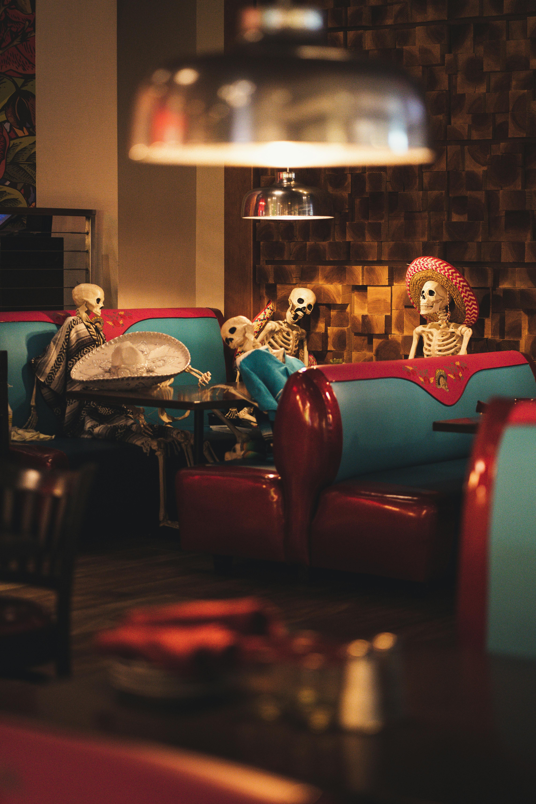
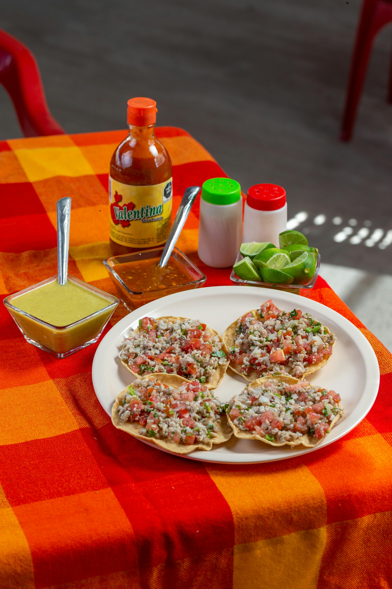

Restaurante Mexicano



Acerca de Nosotros
Nuestra Historia
Con más de 30 años de experiencia, hemos sido un referente de la cocina mexicana tradicional. Fundado en un pequeño local, nuestro restaurante ha crecido para ofrecer una experiencia auténtica y casera en cada plato.
Calidad y Tradicion
Utilizamos ingredientes frescos y de calidad superior, asegurando que cada receta conserve la esencia de la cocina mexicana. Nuestros cocineros han perfeccionado el arte de combinar sabores únicos que resaltan en cada bocado.
Que Ofrecemos
Ofrecemos una amplia variedad de platillos mexicanos, desde los más tradicionales hasta innovaciones contemporáneas. Todo nuestro menú está diseñado para complacer a los paladares más exigentes.